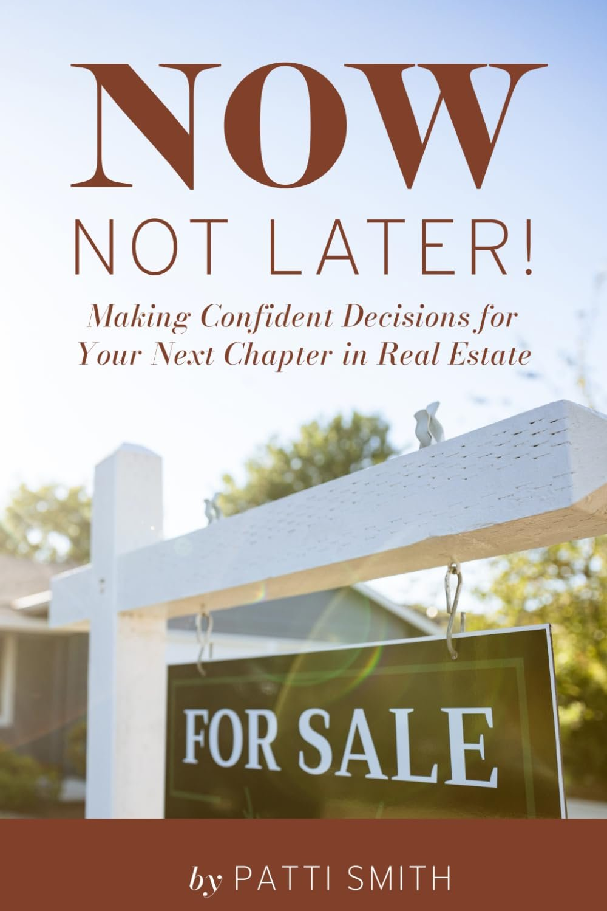
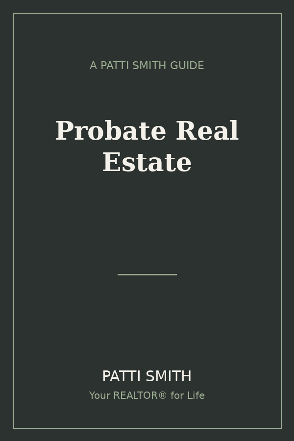

A Real Estate Memoir
Your Real Estate Consultant & Broker
The story behind a life in El Dorado County real estate, and the relationship-first principles that have not changed since 1992.

The story behind a life in El Dorado County real estate, and the relationship-first principles that have not changed since 1992.

Patti Smith is an independent broker and the managing broker of Patti Smith Real Estate, a family-founded brokerage in Georgetown, California. She has represented buyers and sellers across El Dorado County since 1992, the second generation of her family to do this work in these foothills.
This book is the story behind that work: where she came from, what she learned along the way, and the principles she lives by as your real estate consultant and broker.
The founder of By Referral Only on what he has seen in Patti across more than twenty-five years.
You are in excellent hands.
Some people find their way to By Referral Only. Others were born into it before it had a name.
Patti Smith is the second kind.
Her mother answered the phone on Christmas Eve because a buyer was calling, and there was no answering machine, and every call was the business, and that was simply understood. Her father gave away half his commission when he knew a family needed the money more than he did, because in his world, the outcome was always more important than the compensation. The brokerage that carries Patti's name today is the same one her parents built more than fifty years ago in Georgetown, California, a small mountain community where everybody knew who you were and what you stood for, and where your reputation was the only marketing that existed or mattered.
That is the By Referral Only philosophy at its most elemental. Not a strategy you adopt at a seminar and implement on Monday morning. A way of being that gets handed down through a family across generations, absorbed before you have language for it, practiced before you know you are practicing it.
I remember when Patti first came to a main event, late in the 1990s, brought in by a lender named Steve Cockrell, who had attended and come back changed the way people come back from things that genuinely shift something in them. She showed up with an ice chest and a bag of licorice, ready to stay until we were done, which in those days was sometimes closer to midnight than most people were prepared for. We did not give you a chance to get distracted. We kept you in the room, and we worked. Patti was exactly the kind of person those rooms were built for: someone who had already decided that doing this work the right way required learning how to do it the right way, and who was willing to pay whatever that cost in time and effort and discomfort.
She went to main events in San Jose, Seattle, San Francisco, and San Mateo. She did not go somewhere fun for the weekend. She went somewhere she could focus. That choice, repeated across years, is itself a statement about who she is.
I have known Patti for more than twenty-five years. What I know is this: she has never stopped learning, never stopped adapting, and never stopped serving her clients with the same fundamental commitment her mother demonstrated by picking up the phone on Christmas Eve. The contracts that were one page when her mother was selling have grown to thirty pages and beyond. The MLS that did not exist when her family started the brokerage now sits in her pocket. The technology that required a trip to San Francisco to learn on an Apollo terminal is now a voice she speaks to from a cabin in Montana or a campsite on the Rubicon Trail with a Starlink connection. She has adapted to every single change, not reluctantly, not after everyone else forced her to, but with the same forward-leaning instinct her father brought to leading Jeeps through terrain that no vehicle had successfully crossed before.
But underneath all of that adaptation, underneath the technology and the thirty-four years of experience and the specialized knowledge of rural mountain real estate, is something that has never changed and will never change: the belief that this work is about people. About fairness. About telling the truth before the postmaster tells it for you. About sitting in a closet with a grieving widow because you know how it feels, and she needs to know that someone does.
That is not something you learn in a licensing course. That is something that gets built into you slowly, through watching and doing and refusing to stop when the situation gets hard, through a childhood spent observing a mother who answered every call and a father who built community wherever he went and gave away what he had when someone else needed it more.
The book you are about to read is the story of how Patti Smith became the kind of agent who, after thirty-four years in the same market, still has other agents tell her they were relieved to see her name on a listing because they knew it meant the transaction would be straightforward, the information would be accurate, and the outcome would be fair. That is a reputation that cannot be manufactured. It has to be earned, year by year, transaction by transaction, honest conversation by honest conversation, choice by quiet choice.
A life that arrived at real estate by way of a prairie kitchen, a father who lived by service above self, and twenty years of going places, before the work that brought Patti home for good.
Tap any chapter to read it in full.
I did not choose real estate. Real estate chose me before I was old enough to have an opinion about it.
My mother, Irene Smith, was the first agent in our family brokerage, and my father, Mark A. Smith, and the A matters to him, was the broker of record. The office was in Georgetown, California, a small mountain community in El Dorado County, where everybody knew everybody, and two realtors covered the whole town. Nobody from over the hill was allowed to come in and list anything or sell anything. There was no MLS. Contracts were one page. There were no computers, no sharing of information between agents, no databases to search. It was word of mouth, community presence, and being known well enough that when someone needed to buy or sell, your name was the first one that came to mind.
That was more than fifty years ago. And in many of the ways that matter most, it is still how I work today.
You might be reading this because you are thinking about buying or selling a home in the foothills of El Dorado, Placer, or Sacramento counties, and you are trying to figure out who to trust with something this important. What I want you to understand before anything else is that the relationship between my family and this community goes back half a century. The brokerage I run today started as my parents' brokerage. The values I bring to every transaction were demonstrated to me in my childhood kitchen, at my mother's dress shop, on my father's Jeep trails, long before I ever held a real estate license. You are not hiring a service. You are hiring a lineage.
My mother's family was German, rooted deeply in Lodi, and large in the way families used to be large. Seven siblings. A grandmother named Grandma Geigle, who raised them all, while Grandpa John, who spoke German and played the accordion and had never fully transitioned to English, provided a particular kind of steadiness that did not require many words. A family that gathered every Christmas without exception because that was what you did. That was not a tradition. It was a non-negotiable.
Strong family ties. Strong faith. The kind of upbringing where if someone asked you to describe your childhood, you would reach for the image of Little House on the Prairie, not because it was dramatic or picturesque, but because it was rooted. Because people showed up for each other. Because commitments were kept. Because the household operated on a shared understanding of what mattered and what did not.
If you grew up in a family with that kind of gravity, you know what I mean. There is a particular steadiness that settles into you when you watch the adults in your life treat their obligations as sacred. It shapes what you expect from yourself without anyone announcing that it is happening. You just absorb it, the way children absorb everything that is modeled consistently and without apology.
That steadiness is in me. It is in the way I approach a transaction, the way I handle a difficult moment with a client, the way I stay in a deal when it gets complicated. It is not something I practice. It is something I was raised inside of.
My mother was not only a real estate agent. She also ran a dress shop in Georgetown, and the story of that dress shop is more layered than it might first appear.
She was not a seamstress. She did not make the clothes. She was a buyer and a curator, someone with an eye for what looked right and the connections to acquire it well. My great-grandmother, Mealy, from my father's side, was a buyer for Macy's in San Francisco. She worked with the textile markets. She knew how that world operated. And she set my mother up with the right sellers, people who gave her honest prices because Mealy had built those relationships with care over years.
The result was that my mother's small dress shop in a small mountain town had access to inventory that felt almost improbably good. And because I was the perfect size for buyer's samples at the time, a size seven, I was outfitted from that inventory. I was always the best-dressed kid in the neighborhood. That was not an accident. That was the fruit of relationship, access, and knowing who to know.
But what stayed with me from those trips to San Francisco was not the clothes. It was the negotiating.
I used to sit in the corner, quiet, watching the back-and-forth between my great-grandmother and the textile sellers. What I absorbed in those moments was a specific understanding of what negotiation actually is when it is done well. It is not combat. It is not one party trying to defeat another. It is two parties trying to find the number and the terms that feel fair to both of them, arrived at through calm and honest exchange. There was no intimidation in those conversations, no posturing, no attempt to manufacture urgency. There was just an honest assessment of value and a shared interest in making the deal work.
I have run every real estate negotiation of my career the same way. I do not understand why some agents approach the other side as an adversary to be defeated. I have been in this market for thirty-four years. I will be working with many of those same agents on the next deal and the one after that. The goal is a fair outcome for everyone at the table, arrived at with honesty and without drama. That is what I watched being modeled in those San Francisco showrooms when I was young enough to still fit into the sample sizes.
And then there was the phone.
The landline was in the kitchen. It rang whenever it rang. During dinner. On Sunday afternoons. On Christmas Eve.
My mother answered it every single time.
In those days, there was no answering machine. If she did not pick up, that call was gone. In a small community with only two realtors, in an era before the internet existed and before information was shared between agents, every incoming call was a potential transaction that would either be captured or lost in the moment it rang. My mother understood this not as a burden but as the nature of the work. The work does not stop because it is inconvenient. The work is happening, and your job is to be there when it does.
I remember the specific detail of the Christmas Eve call because it crystallized something. Most businesses close on Christmas Eve. Most professionals take the night off. My mother was at the table with her family, and the phone rang in the kitchen, and she got up and answered it, and on the other end was a buyer.
Think about what that modeled for me as a child. Not that the business was more important than the family. But that the commitment you make to the people who trust you does not have a holiday exception. That when someone needs you, you are there. That the phrase I will take care of that is not qualified by the date on the calendar or the time on the clock.
I answer my phone. I handle things when they come up, not when it is convenient for me. I have been doing this for thirty-four years in the same community, and the reputation I have for being available, reliable, and present did not come from a business strategy. It came from watching my mother pick up the phone on Christmas Eve.
If I am honest about my childhood, and this book is built on honesty, there were ways in which my mother's attention was not equally distributed across her four children. I was the third child. When the youngest arrived, the family dynamic shifted, and I found myself becoming more self-reliant earlier than most children are asked to. I became a caretaker to my younger sister. I learned to pick myself up from difficult things and keep moving without waiting for someone to come and steady me first.
I do not tell this to invite sympathy. I genuinely do not believe in organizing a life around the poor me narrative. I am who I am because of everything I have been through, and the self-sufficiency that came from that particular chapter of my childhood is one of the things I am most grateful for now.
What it gave me, in practical terms, is the ability to handle whatever arises in a transaction without needing to be managed through it. I do not wait on the broker to tell me what to do. I do not fall apart when a deal gets complicated. I do not stand at the edge of a difficult situation hoping someone will come and tell me how to proceed. I have been figuring out what to do next since I was a young child, and I have been doing it in real estate for thirty-four years.
My brother Greg and I are close. Twenty-two months apart, we have a shared reality of what our childhood was, and that shared understanding matters to me. He knows the version of things that I know. And what we both know is that the household we grew up in, for all its complexity, produced people who can take care of themselves and others, who do not fold under pressure, and who show up when showing up is required.
That is not a small inheritance.
The brokerage my parents built started between 1973 and 1975, in a small mountain town, with no technology, no shared listings, and a one-page contract. My father was the broker who opened it. My mother was the agent who ran it every single day. My father was the entrepreneur, the one who followed the next thread when it appeared, and I will tell you much more about that in the next chapter. My mother was the one who kept the lights on, answered every call, built every relationship, and turned the word of mouth of a small community into a decades-long foundation.
I am thirty-four years into running that same brokerage. The name changed from Mark Smith to Patti Smith. The technology has changed in ways that neither of my parents could have imagined. But the foundation has not changed at all. Community presence. Availability. Honesty. Fairness. The understanding that your reputation in a small town is everything, and that it is built or destroyed one interaction at a time.
You deserve an agent with those kinds of roots. The next chapter is about my father, a man who led a Jeep through the Darien jungle, shared steak and lobster on a mountain with Lee Iacocca, and gave away half his commission when a family needed it more than he did. His values are just as present in how I work today as anything my mother ever showed me.
© 2026 Patti Smith. All rights reserved.
My father, Mark A. Smith, was born in Globe, Arizona, and grew up in Ely, Nevada, in a mining community where his grandmother ran a boarding house for miners. That is where he first learned to love soup, because soup was what you made when you needed to feed a house full of working men efficiently, economically, and with enough warmth to send them back out into the cold the next morning. The boarding house was his first education in hospitality, in the idea that taking care of people is not a transaction but a practice, something you show up to consistently, regardless of whether you feel like it on a particular day.
From Ely, he went into the Marines. Then he worked in Oakland and San Francisco, finding his footing in the world, learning what he was capable of in environments that were not designed to be comfortable. Then he moved to Georgetown and became a deputy sheriff, which suited him, the combination of community service and physical presence in a rugged landscape. Then he owned a logging company, because an opportunity appeared, and he was the kind of person who followed opportunities when they appeared, regardless of whether the path was smooth. In between, when he needed a reliable income floor, he sold cars. He always knew that selling cars was something he could do, and having that option in his back pocket gave him the freedom to pursue the next frontier without the fear of losing his footing.
If you recognize this pattern in someone you know, or in yourself, you understand something about what it produces. It produces someone who is genuinely unafraid of starting over, of learning something new, of walking into a room where they are not yet established and doing the work to become established. It produces someone who does not confuse stability with stagnation. My father modeled all of this for me, and it is in the way I have navigated thirty-four years of a market that has changed dramatically at least four or five times during my career.
The thing my father was proudest of was not the logging company or the car sales or even the real estate brokerage he opened. It was the Jeepers Jamboree, the exploration company he built around guiding people through the Rubicon Trail and eventually across terrain that had defeated every previous attempt.
He was deeply involved with the Georgetown Rotary Club, whose motto, service above self, was not a slogan for him but an operating principle. When he organized Jeep trips through small communities across the region, he would reach out to local service organizations and invite them to run the breakfasts, the lunches, the campsites, so that the proceeds from those services went back to the clubs and helped fund their ongoing work in the community. He hired Rotary Club members to wash and prepare the Jeeps between trips. He created a small economic engine built around adventure and community, and he made sure that the community benefited at every point of contact.
Community. Service. Caring. Those are the three values I would name if you asked me to distill my father into a handful of words. Not because he announced them but because I watched them operate consistently, quietly, in everything he did. He made sure transactions were fair. He would give away half his commission when he knew a family needed the money more than he did. In his real estate work, the outcome was the point, not the compensation. He did not count what he was making until the end, and he never counted on it until the check was in his hand.
I am exactly the same way. When I am working a transaction, I am not thinking about my commission. I am thinking about whether this is going to work out the right way for the people who trusted me with it. The check arrives at the end, after the work is done, after the outcome is real. That sequencing is not accidental. It is inherited.
I need to tell you about the night Lee Iacocca camped on the Rubicon with my father, because it says something about my father that no summary can capture.
Iacocca flew in, landed somewhere near Tahoe, and my dad met him and put him in a Jeep and guided him through the Rubicon Trail himself. He spent the night at camp. I was there that night, working as the bartender and one of the cooks. He drank Dewar's Scotch and water. We served steak and lobster, maybe some Opus to drink alongside it. He was genuine that evening, not performing for anyone, not the version of himself that appeared in press photographs and on the covers of business books. He was a man having one of the great evenings of his life, out in the mountains, doing something real, guided by someone who knew that terrain better than anyone.
He wrote my father a letter afterward. He said it was one of the best experiences he had ever had in his life. Then his helicopter came and picked him up the next morning, because he had somewhere to be, and that was that.
I was young enough that the helicopter made an impression on its own terms. But what stayed with me more deeply, and what I have come back to many times over the years, was the recognition of what that visit represented. Lee Iacocca did not come to the Rubicon because my father had the biggest sign, the loudest advertisement, or the most prominent presence in any directory. He came because of the quality of what my father had built. Because the experience my father offered was genuine and remarkable, and existed nowhere else in the world. Because the best of the best, when they want the real thing, will find whoever is actually doing it.
That is what I try to offer my clients. Not the flashiest marketing or the most aggressive sales approach. The deepest knowledge of this place and these properties and these transactions, thirty-four years of it, available to anyone who wants to work with someone who has actually been here the whole time and knows this terrain the way my father knew the Rubicon.
My father led an expedition through the Darien jungle, from the tip of South America to the tip of Alaska, and they were the first group to successfully make it through terrain that had stopped everyone who came before them. The Jeep he drove on that expedition, the one with El Jefe painted on it, is still in the family. My brother has it now.
Forty-eight years after that expedition, we are taking El Jefe to Moab for Easter Safari, to a vintage Jeep display where several of the other vehicles from that original journey will also be on display. There is another gentleman whose father was on the expedition, and we are going to do a small presentation together, the two of us standing next to our fathers' Jeeps, telling the story of what happened forty-eight years ago in a jungle that had never been crossed that way before.
I have been thinking about this a great deal lately, about what it means to be part of a family that leaves that kind of mark. Not in headlines or official monuments but in the living memory of a community of people who shared something genuine and kept it alive across nearly five decades. The Jeep community is tight-knit in a way that outsiders do not always understand. My father is woven into that history in a foundational way.
There is a Jeep community in the foothills and mountains where I work, and those are my people in a particular way. The values of that community, self-reliance, mutual aid, respect for the land, and willingness to go where the road runs out, are the same values that shaped the family that has been doing real estate in Georgetown for more than fifty years.
My father never sat me down and told me to be honest in a business transaction. He showed me by being honest himself, consistently, even when honesty cost him something. He never gave a speech about serving the community. He served it, through the Rotary Club and the Jeep trips and the commissions he gave away, and I watched it happen.
He also never told me to be adaptable. He demonstrated adaptability across an entire career that moved from the Marines to logging to car sales to real estate to Jeep expeditions to consulting for Chrysler. Each transition was not a failure of the previous thing but a recognition that a new thread had appeared and he was going to follow it.
Lee Iacocca came to Georgetown because of what my father built. The Mondavis, those names that represent the best of American wine, trusted my family because of the standard of care, honesty, and attention that my family brought to every interaction. The best of the best sought us out. That legacy is not mine to rest on. It is mine to continue.
Chapter Three will take you with me into my first career, twenty years in the travel industry, a surgery at the Cleveland Clinic in Ohio that changed everything, and the path that brought me back to Georgetown and into the career I have now spent thirty-four years building.
© 2026 Patti Smith. All rights reserved.
I was eighteen years old, out of high school, and college was not a path I was drawn to. I was not a college kind of kid. My father had a friend who owned a travel agency in Davis, and he suggested I go talk to her. I went. She hired me. And I spent the next twenty years building a career in the travel industry that gave me skills I use in real estate every single day, though I could not have told you that at the time.
I want you to imagine what a travel agency looked like in the late 1970s, because the contrast with how the world works now is almost impossible to overstate. There was a tariff book, thick and dense, updated with new pages every week, containing every route, every fare, every rule and regulation governing air travel across the country and around the world. There were no computers in the early days. There was no internet. There were no real-time booking systems. There was the book, your knowledge of it, and your attention to detail.
The difference between an AM and a PM, between Friday night at 11:59 and Saturday morning at 12:01, was the difference between your client arriving at the right gate on the right day and standing in an airport, confused and stranded, with nowhere to go. I booked people onto flights that mattered to them, vacations they had saved for, business trips with consequences attached, honeymoons, family reunions, and once-in-a-lifetime journeys. A mistake in that environment was not just professionally embarrassing. It could genuinely ruin something irreplaceable for a real person.
Measure twice, cut once. Look at it two or three times. Take the time to pause and breathe. Those habits were not taught to me in a seminar. They were drilled into me by the consequences of the alternative, and they have been operational in everything I have done in real estate for thirty-four years.
I progressed through the industry over twenty years. I started with the basics, moved into vacation planning, then management, and then corporate travel. I ended up working in the Napa Valley, handling the business travel accounts for the wineries, routing winemakers back and forth to Europe, booking flights for the Mondavi family and their staff when they needed to move quickly across the world.
Think about what that required. The Mondavis were not casual clients. They were people who operated at the absolute highest level of their industry, and they needed things handled correctly, without drama, exactly on time, every time. I was the person responsible for that. Not because I had a grand title, but because I had earned their trust through consistent accuracy and reliable availability and a genuine understanding of what they needed.
When United Airlines introduced the Apollo reservation system, I went down to San Francisco for the training class and learned it completely. When deregulation came and reshaped the industry around us, I adapted to that too, learning the new structure and figuring out how to serve my clients within a changed landscape. I was not someone who waited for the world to slow down so she could catch up. Whatever the new tool was, I learned it, used it, and served my clients better because of it.
That disposition toward technology carried directly into real estate. I will tell you more about that in a later chapter. For now, understand that the willingness to adapt is not a new development in my career. It is a constant that has been running since I was eighteen years old, booking flights from a tariff book in Davis.
Deregulation changed the economics of the travel industry, and while that was reshaping everything around me, my body presented me with a more urgent situation.
I was diagnosed with severe heart disease. I needed open-heart surgery. They sent me to the Cleveland Clinic in Ohio because I was young, only around thirty-eight, and the situation was complicated enough that the surgeons needed to decide between repairing the valve and replacing it. If they replaced it, I might need four or five more replacements over the decades ahead, because the mechanical valves were only lasting about ten years at the time. The surgeon at the Cleveland Clinic believed he could repair mine. He was right. He took the valve out, repaired it, and put it back in. I was there for ten days. They cracked the ribs. They did the work. I have never had a problem since.
I do not tell this story to generate sympathy. I tell it because of what it clarified.
You do not sweat the small stuff. When you have had a specific, concrete experience of what it looks and feels like to have your life genuinely uncertain, the category of things that qualify as real problems gets much smaller. A difficult negotiation is not a real problem. A market downturn is not a real problem. A complicated transaction that requires creative problem-solving is not a real problem. These are conditions that require work. I know what a real problem looks like, and I know the difference.
I also had a son I was raising. He had his father, but there was no way I was going to let him be raised in the Bay Area without me, and there was no way I was going to die. That sounds simple when I say it. It was not simple to experience. But I had decided, with the kind of clarity that only that kind of situation produces, that I was coming back. And I did.
Willpower, I discovered during that recovery, is not a motivational concept or a personality trait that some people have, and others do not. It is something that gets built through circumstances that require you to use it when you genuinely do not know if you have it. I found out that I had it. And every difficult transaction I have stayed in since then, every market downturn I have put my head down and worked through, every moment when walking away would have been the easier choice, has been run on the same fuel.
While I was on disability, recovering from the surgery, my father told me to get my real estate license.
My immediate reaction was that there was no way in hell I wanted to do that. I did not want to work weekends. I did not want the unpredictability of a commission-based income. I had spent twenty years building a career in a different industry, and I was not interested in starting over in one that, from the outside, looked like exactly what I had always hoped to avoid.
He said: Just get your license.
So, I did. And here I am, thirty-four years later.
The change of heart was not a single moment. It was a gradual recognition that this work, done the right way, with the right orientation toward the people you serve, is rewarding in a way that almost nothing else I had done was. Travel had been rewarding in the short term. A booking completed, a trip successfully arranged, a client thanking me on their way to the gate. But the reward was transactional. It ended when the trip did.
Real estate is rewarding across time. Across relationships. Across the full arc of what happens to a family when they find the right place to live and the right conditions in which to build the life they want.
My first real client to make that visible to me came from Southern California, avocado country around Olive Hill. He got in the back of my car, put his ice chest in, popped open a beer, and said: Drive. He was looking for a farm ranch house in the foothills, a different kind of life, more space, more quiet, more connection to something that felt real and solid. I helped him find it. And after that, he kept moving family members up, one by one, until the whole family was on the Divide, scattered across the hills in different properties, all of them brought there because one person had made the change and the rest of the family had followed.
I did not just sell a house that day. I helped start a migration. And I realized, somewhere in that process, that this was the work I was supposed to be doing.
I am aware that a career path from travel agency to corporate booking to open-heart surgery recovery to real estate does not look like a straight line. It is not. But everything in it contributed something specific and real to the agent I became.
The travel industry gave me attention to detail built on genuine consequences. It gave me the instinct to check and check again before committing to something that cannot easily be undone. It gave me the experience of handling the Mondavis and the winery executives, people who need things done right the first time and do not have patience for anything less, and of earning their trust through consistent accuracy and reliable availability.
The surgery gave me the willpower that cannot be manufactured, the kind that comes from a specific moment of genuine uncertainty and the decision, made at the level of the bones, to come through it.
And the choice to get my license, made reluctantly at my father's suggestion while I was still recovering, brought me back to the community where I had grown up, the brokerage my parents had built, the landscape I knew in my body the way you know things when you have spent your whole life in them.
Real estate did not get a blank version of me. It got the fully constructed one.
Chapter Four is about what I believe now, after thirty-four years of practicing this work in these mountains. About willpower and rural life and fairness and honesty and why I will always tell you something uncomfortable before the postmaster has the chance to tell it to you the day after we close escrow.
© 2026 Patti Smith. All rights reserved.
When markets collapse, some agents stop working. They pull back, protect what they have, wait for conditions to improve, and hope the phone starts ringing again when things get easier. I understand the impulse. I do not share it.
When markets go bad, I put my head down and work harder. I look for other ways. I adapt to whatever tools and approaches are available. I have been through multiple full market cycles in thirty-four years, and I have come out the other side of every one of them, not without difficulty, but intact and still here, still serving my clients, still in the same community I have been in for my entire career.
I know exactly where the willpower comes from. I have told you about the surgery at the Cleveland Clinic, about the decision I made on a hospital table at thirty-eight years old that I was not going anywhere because I had a son and a life and a community that needed me in it. That experience recalibrated everything. It clarified what a real problem looks like and what merely looks like a problem until you have some actual perspective on it. A difficult negotiation is conditions, not crisis. A market downturn is a period, not a permanent state. I know what a real problem is, and I have made the decision, in an environment that left no room for pretending, that real problems do not stop me.
You want an agent who has that compass. Who does not confuse difficulty with impossibility. Who is going to stay in your transaction when it gets hard, not because it is easy, but because they have already decided that staying in is what you do.
I specialize in El Dorado, Placer, and Sacramento counties, in the rural communities and farmlands and properties where people can have five acres, a big workshop, chickens, a garden, trails out the back gate, and a night sky with actual stars in it. I know this world because I live in it. I grew up in it. My brother had a cow growing up. My parents hunted, and venison was a winter staple. The landscape of the foothills is in me the way landscapes get in you when you spend a childhood moving through them.
What I understand about the people who move to these communities is that they are not running away from something. They are running toward something specific. They have a picture in their mind of the life they want, and the foothills are where that picture becomes possible.
The retiring carpenter from San Jose who cannot stand being crowded anymore, who wants twenty-five acres and a big shop and a quiet house where he can hear himself think. The family that wants to homeschool their children, grow their own food, and exist inside the rhythms of a rural property rather than the rhythms of a city schedule. The nurse or the firefighter working three days on and four days off, commuting to the Bay Area for their shift, and then coming home to the mountains because the mountains are where life actually happens for them. The pilot who works ten days for CAL FIRE and then flies back to the property he is building a life on here.
These are my people. And I serve them well because I am not translating their dream from the outside. I am living the same life, on the same land, in the same community. When I tell someone what to expect from a summer at altitude, or what the deer will do to the garden if you are not prepared for them, or what the night sky looks like from a ridgeline above the tree canopy, I am not reading from a brochure. I am describing where I live.
I want to give you a real picture of what you are buying when you buy property in these mountains, because you deserve honesty about the whole thing rather than just the beautiful parts.
The night sky is extraordinary. On a clear night, away from the trees, you will see more stars than you have ever seen at once. That is real, and it is one of the things people talk about for years after they move here.
The summers can hit a hundred to a hundred and five degrees on the worst days, but most of the time you are in the high eighties to low nineties, cooler than the valley, cooler than the Bay Area during a heat wave, and with the National Forest half an hour to forty-five minutes away, there are trails and elevation and shade available when you want them.
You will get all four seasons. You will get some snow in winter, not a crippling amount in most years, but enough to remind you that you are living somewhere with actual weather. The fall is extraordinary. The spring, when the hills are green before the summer burns them gold, is something people do not always expect.
And the deer are adorable until they find your garden. I say this with affection because I have had this exact conversation with new arrivals many times. They see the deer in the first week, and they are delighted. By the time the third garden has been eaten, the tone has changed. This is real life in the country, and it includes the animals that were here before you arrived.
We have Starlink. That has changed what is possible for people who need reliable internet and want to live outside the reach of conventional infrastructure. We have people working entirely remotely, running businesses from properties that would have been considered off the grid entirely a decade ago. That has expanded who can live here and how, and it has brought a new wave of people discovering what the foothills offer.
I have been here through every wave. I know this place in all its seasons and all its conditions. That knowledge is yours when you work with me.
I always say: if I do not tell you, the postmaster will tell you the day after we close escrow.
This is not a philosophy I adopted. It is a standard I hold myself to because I understand what it means to trust someone with the most significant financial decision of your life and then discover, after the fact, that they knew something you should have known.
Last month, I forgot to schedule the CAL FIRE inspection on a transaction. My buyers were from Los Angeles. They had no idea such an inspection was required. They would never have discovered that I had forgotten it. The transaction would have closed without it, and they would have moved in and settled, and the inspection would have been a loose end I left behind them.
I went home that evening, called them, told them exactly what had happened, told them what the inspection was for and why it mattered, and committed to handling it immediately. They said OKAY. We handled it. We closed.
That is the whole story. No drama, no cover-up, no waiting to see if anyone would notice. Just the fact, stated directly, with an immediate commitment to make it right.
There was another situation the same month where I knew something that the client would technically never have discovered. The moment I recognized it, the calculation was simple: they will never know, but I know. And that was the end of the calculation. I told them.
You will always hear the hard thing from me before it becomes harder. That is not a marketing promise. It is how I have been doing this work for thirty-four years in a community where everyone knows your name and your record follows you everywhere you go.
I learned from watching my father give away half his commission that the purpose of a transaction is not to extract the maximum possible from every situation. The purpose is the right outcome for the people involved.
What this means in practice is that I go into every negotiation focused on the result, not the compensation at the end of it. I do not think about what I am earning until the check arrives, and I never count on it until the deal is closed. That sequencing keeps my attention where it belongs, which is on making sure that the buyers get what they need and the sellers net what is fair, and the transaction closes in a way that both sides can feel good about.
I do not understand the agents who approach the other side of a transaction as an adversary. The other agent and I will be in another transaction together next month, the year after that. Mutual respect between agents makes every transaction smoother, faster, and better for the clients on both sides. I have been in this market long enough that most agents know my name, and what I hear from them when we close is often that they were glad it was me on the listing, that they knew it would be straightforward, that the information I gave them was accurate, and that the process was clean.
That is the reputation I have built. Calm, honest, fair, not getting upset or riled during the transaction. That is how my mother negotiated in her dress shop. That is how my father ran his business. That is how I work.
Chapter Five is about the specific capabilities that thirty-four years of this work have built. Some of them are practical. Some of them are harder to name, but just as real. All of them are available to every person who works with me.
© 2026 Patti Smith. All rights reserved.
Every agent in your market took the same licensing exam. They all completed the same required courses, learned the same contract language, and received the same piece of paper at the end. That piece of paper is the floor, not the ceiling. What happens above it is entirely a function of who that person is, where they came from, what they have seen, and how many times they have stayed in a difficult situation until they found the way through, rather than walking away when it got complicated.
I have been licensed for thirty-four years in this specific market, these specific mountains, these specific communities, for all of it. Here is what you actually get when you work with someone who has been here the whole time.
This sounds simple. It is one of the rarest things in this business.
Most agents come into a first meeting with a plan, a pitch, a set of assumptions about what you need and how the process should go, built on their own preferences and habits rather than on anything you have told them. They are waiting for a pause in your sentences so they can say the next thing they planned to say. They are not really hearing you. They are managing the conversation.
I do not do that.
What you say to me in the first conversation is the most important information I have. What you actually want, what you are afraid of, what you have already tried, what you are hoping is possible, and what you suspect might not be. If I can hear all of that clearly and reflect it back to you accurately, I can serve you better than any agent who spent the whole meeting waiting for their turn to talk.
I learned the discipline of genuine listening from Joe Stumpf early in my By Referral Only training. He taught me to sit with a client, hear what they wanted in their own words, and then write it back to them in their language so they knew they had been heard. That practice became the instinct I lead with in every client relationship. People trust you when you actually hear them. In a process as significant as buying or selling a home in the mountains, trust is not a nice-to-have. It is everything.
Thirty-four years in a specialized rural market means I have encountered almost every possible scenario a real estate transaction can produce. Short sales. Reverse mortgages. Estate properties where the heirs are managing things from a distance and need someone on the ground who can be trusted completely. Properties with complicated water rights, easement questions, shared road agreements, and agricultural history that affects current use. Market crashes and the long rebuilding periods that follow them.
When something unusual surfaces in your transaction, I do not need to go look it up or call someone who has seen it before. I have seen it before. And if by some genuine chance something new appears, I know exactly who to call and what to ask, because thirty-four years of relationships in this community means I have access to expertise in every area that rural real estate requires.
The calm you will notice when things get complicated is not indifference. It is experience. I have been in this specific situation, or close enough to recognize the pattern, and I know that the path through it exists. My job in those moments is to keep you out of the panic so we can solve the problem together, clearly and efficiently, without the emotional cost of catastrophizing something that is actually solvable.
I keep deals together. Not by avoiding the hard parts but by staying in them, working them, helping people step back from the emotional decision to the thoughtful one, and refusing to declare something over until it actually is.
What I want to describe as a superpower is not just the decision to be honest, which should be universal but unfortunately is not, but the specific skill of delivering uncomfortable information in a way that keeps the transaction moving and keeps the client confident.
There is a version of honesty that is just unloading difficult information onto someone and walking away. That is not what I do. When something comes up that my client needs to know, I tell them clearly, I explain what it means in practical terms, and I immediately offer a path forward. Here is what happened. Here is what it means for us. Here is what I am doing to handle it. That sequence keeps people calm and keeps transactions alive through the moments that might otherwise break them.
Thirty-four years in a small community means that my reputation is the most valuable thing I own. Every interaction either builds it or erodes it. I do not get to have a bad month and assume nobody noticed. That reality has ingrained a standard of honesty that goes all the way through, not because I am afraid of consequences but because integrity in a community of this size is not separable from the life you are living in it.
I went from tariff books with no pictures to Apollo terminals in San Francisco to the early internet to every iteration of real estate technology that has appeared since then, and now to ChatGPT, which I started using the moment I understood what it could actually do for my clients and my work.
My relationship with technology is practical, not performative. It is about efficiency, about options, about being able to do more for my clients faster and more accurately than I could without it. When I can pull up the five properties in the area that meet a specific set of criteria in seconds instead of an afternoon, I have more time to think about what those properties actually mean for the person I am trying to help. When I can use AI tools to work through a problem or prepare for a complicated situation, I arrive better prepared.
Technology has also changed who can live in the areas I serve. Starlink has brought reliable internet to properties that were effectively isolated from the digital economy until very recently. That has opened the foothills to a new category of buyer, and I understand that market because I have been watching it develop in real time. I know what those buyers need and what the properties that serve them actually look like.
I like learning. Every time I figure out something new, it feels like an accomplishment, the way learning a new piece on the piano feels like an accomplishment. I am still behind some of the younger agents in certain technical areas, and I am comfortable with that. I am not trying to be the most technically sophisticated agent in the market. I am trying to use every tool that genuinely helps my clients get better outcomes.
After thirty-four years, one of the most important things I have built, beyond my own knowledge and experience, is the team around me.
Paula Roggy has been with me for years, and her superpower is simple and essential: she gets it done. No drama, no excuses, no unnecessary complexity. When something needs to happen, Paula makes it happen.
Terry Coleman brings calmness to every situation. In a business where things regularly go in unexpected directions and where the temperature of a transaction can rise very quickly, Terry is the steady presence that keeps everyone thinking clearly and making good decisions rather than reactive ones.
Elisa Brockton is another get-it-done member of the team, the kind of person who clears obstacles and keeps things moving. Angela handles the transaction coordination with the precision this work requires. Barbie rounds out the feet-on-the-ground team that makes it possible for me to be fully present for my clients, whether I am in Georgetown or at my place in Montana or somewhere on a trail with a Starlink connection.
And then there is my husband Steve, an electrical contractor, who has turned out to be extraordinarily useful in a rural market where properties regularly present complications that require someone who understands how power gets from one place to another across large mountain parcels. Last week, we had a contaminated well situation where the contamination was coming from the wellhead at the far end of a five-acre property, and we needed a stronger power source to bring the water all the way up to the house. Steve solved it.
What this means for you is that when you work with me, you are not working with a single agent who goes home at the end of the day. You are working with a group of people who are genuinely excellent at what they do, who care about the outcomes they produce, and who are available and capable and on the ground in a community they have served for years.
© 2026 Patti Smith. All rights reserved.
Real estate has changed more times than I can count across thirty-four years.
The contracts that were one page when my mother was selling are now thirty pages and growing. The MLS that did not exist when my parents opened the brokerage now updates in real time on the phone in my pocket. The technology I learned on a terminal in San Francisco has been replaced by tools that did not exist five years ago, and those tools will be replaced by something else before this decade is out. The market itself has cycled through booms and corrections and slow rebuilds more times than I want to remember, each one taking agents with it who had built their business on conditions rather than convictions.
What does not change is what I believe.
Not what I say I believe, but what actually shows up in my behavior when a transaction gets difficult, when honesty is inconvenient, when a family needs something I was not planning to give them, when the market says this deal is done and I have decided it is not done yet. Beliefs are not statements. They are the things that hold when nothing else is holding.
Here is what holds for me.
I have closed thousands of transactions in thirty-four years. I do not think about any of them as transactions.
I think about the family from Southern California who put their ice chest in the back of my car and said, " Drive", who found a farm ranch house in the foothills and then spent the next several years bringing the rest of their family up to join them, one property at a time, until the whole family was on the Divide. That was not a transaction. That was a life change that spread through a family and changed the trajectory of people I had never met when I first took that drive.
I think about the widow who hid in a closet on the day of closing because she had lost her husband and could not make herself walk out the door of the house they had shared. I crawled into that closet and sat with her and cried with her because I knew how it felt, and because the only thing that was going to help in that moment was not a professional in a blazer with a solution but another human being who understood what she was carrying. We stayed in that closet until she was ready. Then we got up and closed.
You do not get good at sitting in a closet with a grieving widow from a training course. You get good at it from having lost people yourself, from having been in your own versions of that grief, from having decided somewhere along the way that the human being in front of you matters more than the timeline on the contract.
That is the belief underneath everything. The person is the point. The transaction is the vehicle. When you keep those two things in the right order, the work becomes something different than what most people expect real estate to be.
I have watched agents come into this market with energy and talent and genuine promise, and I have watched them leave, sometimes after a few years, sometimes after a market cycle that took more than they had built up to absorb. What I have learned from watching that pattern over three decades is that longevity in real estate is not primarily about skill. It is about the decision, made quietly and repeatedly, to stay in it.
Not to stay in it when it is easy. To stay in it when the market is down and the phone is not ringing, and the work of finding the next deal feels like walking uphill in bad weather. To stay in it when a complicated transaction tests every capability you have. To stay in it when the people around you are making different choices, and the rational calculation might actually favor doing something else.
I have made that decision, to stay, more times than I can count. And each time, I have come out the other side with more knowledge, more relationships, more capacity to serve the next client who comes to me with something hard.
My father followed threads across an entire career, and I watched him do it, and I absorbed the principle of adaptability that underlies it. But I also made a different choice. I found the thread that was mine, and I stayed with it. Thirty-four years in the same community, the same market, the same mountains. Not because I could not have done something else. Because this is the work that actually matters to me, and mattering is reason enough to stay.
You deserve an agent who has made that choice. Not someone who is between other things. Someone who has decided, repeatedly, across years of evidence, that this is the work worth doing.
I did not build my standards in a vacuum.
My mother answered the phone on Christmas Eve. My father gave away half his commission when a family needed the money more than he did. These were not exceptional moments for either of them. They were the consistent demonstration, across my entire childhood, of what it looks like to treat clients and community as genuinely more important than personal convenience or financial optimization.
What that gave me was not a set of rules to follow but a picture of what this work looks like when it is done right. And that picture operates in me at a level below conscious decision-making. When something comes up in a transaction that requires a choice between the easy path and the right one, I do not deliberate for long. I know which one my mother would have chosen. I know which one my father would have chosen. I make the same choice.
The By Referral Only philosophy, which I have been connected to for more than twenty years, reinforces this orientation. The idea that you build a business by serving people so well that they cannot help but tell the people they love, that your reputation is the only marketing that ultimately matters, that the referral is the vote of confidence that carries the most weight because it comes from someone who has actually experienced what you do. That is not a system I adopted because it seemed strategically sound. It is a description of how my family had been operating for decades before I ever attended a main event.
I am a widow. I work with a lot of widowed people. I do not think that is a coincidence.
When you have lost a spouse, you carry something in you that other people can feel, even when you are not talking about it, even when you are in a professional context focused on the work. The clients who have been through that kind of loss seem to find their way to me, or I find my way to them. And what I bring to those situations is not a protocol for handling emotionally difficult transactions. It is the lived knowledge of what that grief actually feels like, what it does to your ability to make decisions, what you need from the people around you when the practical demands of life keep coming, regardless of whether you are ready for them.
The woman in the closet on the day of closing knew that I knew. Not because I told her, but because people in grief can feel when they are being managed versus when they are being accompanied. I was not managing her. I was with her. And that made it possible for her to get up and do the thing that needed to be done.
I believe that the hardest work in real estate is not the negotiating or the paperwork or the problem-solving, though all of those matter. The hardest work is being genuinely present with people who are in the middle of transitions that are bigger than the transaction. Selling the house where someone died. Buying the first home after a divorce. Downsizing from the property where they raised their children into a smaller life, they did not entirely choose. Those are the moments when the technical skills are not enough. When what is required is the willingness to be a full human being in the room rather than a professional with a timeline.
I show up as a full human being. That is not something I learned to do. It is who I am, shaped by everything I have been through, and it is available to every client I work with.
I want to close this book by saying something that might seem counterintuitive.
I do not think of thirty-four years in real estate as an achievement to rest on. I think of it as the foundation for what comes next. Every year I am in this market, I know it better. Every transaction I work through adds something to the knowledge I bring to the next one. Every relationship I build deepens the community of trust that makes a referral-based business possible.
My transaction coordinator is also a licensed broker. My team has people with feet on the ground in Georgetown when I am in Montana or on the Rubicon Trail or in Moab, standing next to my father's Jeep. The infrastructure I have built over thirty-four years makes it possible for me to serve my clients with full capability wherever I am. That is not where I started. That is where thirty-four years of deliberate building has brought me.
And the market I serve is still evolving. Starlink has opened the foothills to people who would have found the isolation impractical a decade ago. Remote work has expanded who can live where. The buyers coming to these counties today have made fundamentally different decisions about how they want to live than any previous generation, and serving them well requires staying current, staying curious, and staying willing to learn whatever is genuinely useful.
I am still learning. I still feel the satisfaction of figuring out something I did not know before, whether it is a new technology, a new type of transaction, or a new way of serving someone through a situation, I have not seen in quite this form. That satisfaction does not diminish with experience. If anything, it increases, because after thirty-four years, I know how much there still is to know.
Whatever brought you to this book, whatever question you are trying to answer about the property in your life or in your future, I hope you found something useful here. And if you are thinking about buying or selling in the communities, farmlands, and rural properties of El Dorado, Placer, or Sacramento counties, I hope you will reach out.
I will answer. I always do.
© 2026 Patti Smith. All rights reserved.
Patti is a true professional! I recently represented a buyer who purchased a home Patti had listed for sale. The property and escrow were challenging, but working with a seasoned professional Realtor® made all the difference. Patti was a great communicator, on top of everything on her end of the transaction and had great resources for vendors that handled all the necessary repairs. Working with Patti made it feel like we were on the same team, with a common goal. The way Real Estate should be! I would happily work with her again, thank you Patti!
Buying my first home could have been overwhelming, but Patti Real Estate made the entire process smooth and stress-free. They were incredibly responsive, day or night, and always took the time to answer all of my questions and concerns. They were proactive, on top of every detail, and quick to schedule showings and put in offers when the right home came along. Even after the sale closed, they continued to be helpful and supportive, which truly meant a lot to me. I couldn't have asked for a better experience and highly recommend Patti Real Estate, especially for first-time homebuyers.
My daughter was able to buy a home independently because she felt so well supported through the process by the Patti Smith team. They were quick to respond and explain and patient when she needed to think things through. I highly recommend this remarkable team!
Patti is a Great Realtor®. She is friendly, gets back quickly when there is a question, and has many long term professional contacts in the area which helps get the process completed quickly. She showed the home, had an offer, closed Escrow and had the money in my account in about 4 weeks. We received more than the asking price on the sale. Fantastic.
If you're looking to buy or sell in our small town, I highly recommend working with Patti Smith! She's knowledgeable, responsive, and truly cares about her clients. She goes above and beyond to make the process smooth and stress-free. It's rare to find someone who combines professionalism with genuine heart and she does both beautifully!
Patti sold my home in 2017 and helped me into my current home in 2018. She made the experience so easy and explained everything to me step-by-step along the way so none of it was confusing. She was very patient and helped me look at multiple houses before I picked my forever home. I'm so grateful to Patti and would give her the highest review possible, she really knows her stuff!
Patti Smith is an independent broker and the managing broker of Patti Smith Real Estate, a family-founded brokerage based in Georgetown, California. She has guided buyers and sellers across El Dorado County since 1992 (CA DRE #01110483).
It is Patti Smith's account of how she came to real estate, the people and places that shaped her, and the relationship-first principles behind the way she represents buyers and sellers across El Dorado County.
Patti serves Georgetown, Garden Valley, Cool, Placerville, Pilot Hill, and communities across El Dorado County, California.
You can call or text Patti at (530) 368-0852, email her at , or search current listings at pattismithrealestate.net.
Each book stands on its own, and together they cover the whole journey of buying and selling in El Dorado County.

The 116 kinds of turbulence that can throw a real estate deal off course, and how a steady consultant guides you through.

Twenty ways sellers lose money without knowing it, and how to price an El Dorado County home to actually sell.

Making confident decisions for your next chapter in El Dorado County real estate.

Selling a home through probate in El Dorado County, with a steady hand through a hard season.